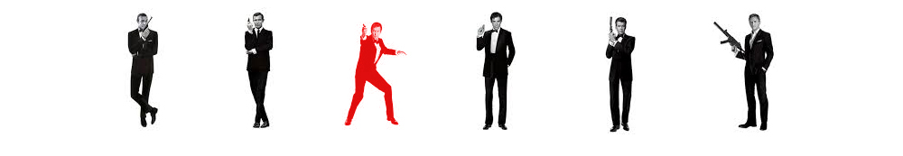
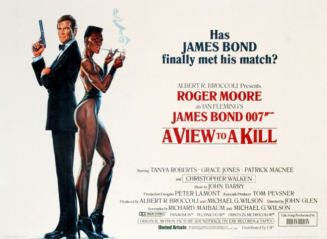
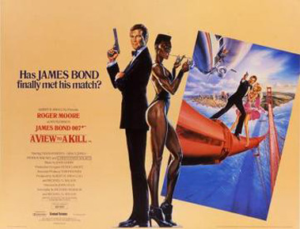
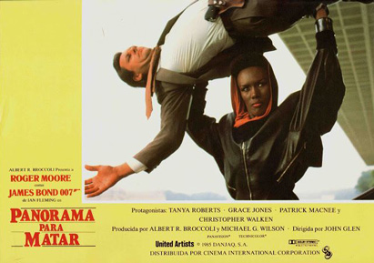
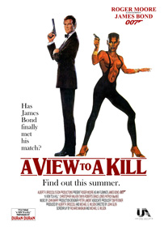
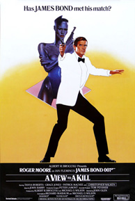
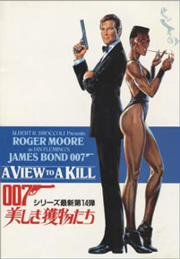
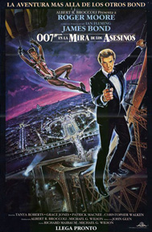
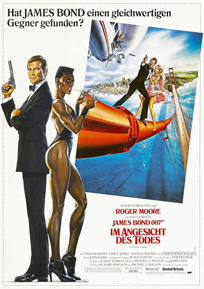
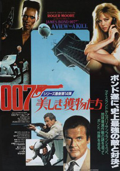

Michael G. Wilson
Richard Maibaum
MI6 agent James Bond is sent to Siberia to locate the body of 003 and recover a microchip originating from the Soviet Union. Upon his return, Q analyses the microchip and establishes that it is a copy of one designed to withstand an electromagnetic pulse and made by government contractor Zorin Industries.
Bond visits Ascot Racecourse to observe the company's owner, Max Zorin. Zorin's horse wins a race but proves hard to control. Sir Godfrey Tibbett, a racehorse trainer and MI6 agent, believes that Zorin's horse was drugged, although tests proved negative. Through Tibbett, Bond meets with French private detective Achille Aubergine who informs Bond that Zorin is holding a horse sale later in the month. During their dinner at the Eiffel Tower, Aubergine is assassinated by Zorin's bodyguard May Day, who subsequently escapes after being chased by Bond.
Bond and Tibbett travel to Zorin's estate for the horse sale. Bond is puzzled by a woman who rebuffs him and finds out that Zorin has written her a cheque for $5 million. At night, Bond and Tibbett break into Zorin's laboratory and learn that he is implanting adrenaline-releasing devices in the horses. Zorin identifies Bond as an agent, has May Day assassinate Tibbett, and believes that his attempt to assassinate Bond has been successful. Afterwards, General Gogol of the KGB confronts Zorin for killing Bond without permission and reveals that Zorin was initially trained and financed by the KGB but has now gone rogue. Later, Zorin unveils to a group of investors his plan to destroy Silicon Valley which will give him - and the potential investors - a monopoly over the microchip industry.
Bond goes to San Francisco, where he learns from CIA agent Chuck Lee that Zorin could be the product of medical experimentation with steroids performed by a Nazi scientist who is now Zorin's physician, Dr. Carl Mortner. Bond then investigates a nearby oil rig owned by Zorin and while there finds KGB agent Pola Ivanova recording Zorin's conversation. Ivanova's partner Klolktoff is captured and killed while trying to place limpet mines on the rig, but Ivanova and Bond escape. They go to her place where Bond is able to steal the recording. Bond tracks down the woman that Zorin attempted to pay off, State Geologist Stacey Sutton, and discovers that Zorin is trying to purchase her family's oil business.
The two travel to San Francisco City Hall to review Zorin's submitted plan. However, Zorin is alerted to their presence and arrives together with May Day, who murders Chuck. When Bond and Sutton try to procure the plans, Zorin kills chief geologist W. G. Howe with Bond's gun and sets fire to the building to frame Bond for the murder and kill him and Sutton at the same time. Bond and Sutton survive the fire, but when the police prepare to arrest Bond for the murders of Howe and Chuck, he and Sutton escape in a fire truck.
Bond and Sutton infiltrate Zorin's mine and discover his plot to detonate explosives beneath the lakes along the Hayward and San Andreas faults, which would cause them to flood, causing the Silicon Valley area to be permanently submerged underwater. A larger bomb is also in the mine to destroy a "geological lock" that prevents the two faults from moving at the same time. Once the bombs are in place, Zorin and his security chief Scarpine flood the mines, killing the mine workers. Sutton escapes, while Bond and May Day are stranded in the mine. When May Day realizes that Zorin has abandoned her, she helps Bond remove the larger bomb by putting the device onto a handcar and pushing it out of the mine. When the handcar's brakes block their attempt, May Day stays on it to make it roll clear of the mine; once outside, the bomb explodes, killing her.
Zorin, who had escaped in his airship with Scarpine and Mortner, abducts Sutton, but Bond grabs hold of the airship's mooring rope. Zorin tries to knock Bond off the rope, but Bond manages to moor the airship to the framework of the Golden Gate Bridge. Sutton attacks Zorin, and in the fracas, Mortner and Scarpine are temporarily knocked out. Sutton flees and joins Bond out on the bridge, but Zorin pursues them with an axe. The ensuing fight between Zorin and Bond culminates with Zorin falling to his death in the waters of San Francisco Bay. An enraged Mortner attacks Bond using sticks of dynamite, but Bond cuts the airship cable free, which causes Mortner to drop the dynamite in the cabin. The dynamite explodes, killing Mortner and Scarpine and destroying the airship. General Gogol awards Bond the Order of Lenin for foiling Zorin's strategy. Afterwards, Bond and Sutton make love in the shower of the Sutton home.
Early publicity for the film in 1984 included an announcement that David Bowie would play Zorin. He later decided to turn down the role, saying, "I didn't want to spend five months watching my stunt double fall off cliffs." The role was offered to Sting and finally to Christopher Walken.
Dolph Lundgren has a brief appearance as one of General Gogol's KGB agents. Lundgren, who was dating Grace Jones at the time, was visiting her on set when one day an extra was missing so the director John Glen then asked him if he wanted to get a shot at it. Lundgren appears during the confrontation between Gogol and Zorin at the racetrack, standing several steps below Gogol.
The film was shot at Pinewood Studios in London, Iceland, Switzerland, France and the United States. Several French landmarks such as the Eiffel Tower, its Jules Verne Restaurant and the Château de Chantilly were filmed. The rest of the major filming was done at Fisherman's Wharf, Dunsmuir House, San Francisco City Hall and the Golden Gate Bridge in San Francisco. The Lefty O'Doul Bridge was featured in the fire engine chase scene. The horse racing scenes were shot at Ascot Racecourse.
Production of the film began on 23 June 1984 in Iceland, where the second unit filmed the pre-title sequence. On 27 June 1984, several leftover canisters of petrol used during filming of Ridley Scott's Legend caused Pinewood Studios' "007 Stage" to burn to the ground. The stage was rebuilt, and reopened in January 1985 (renamed as "Albert R. Broccoli's 007 Stage") for filming of A View to a Kill. Work had continued on other stages at Pinewood when Roger Moore rejoined the main unit there on 1 August 1984. The crew then departed for shooting the horse-racing scenes at Royal Ascot Racecourse. The scene in which Bond and Sutton enter the mineshaft was then filmed in a waterlogged quarry near Staines and the Amberley Chalk Pits Museum in West Sussex.
On 6 October 1984, the fourth unit, headed by special effects supervisor John Richardson, began its work on the climactic fight sequence. At first, only a few plates constructed to resemble the Golden Gate Bridge were used. Later that night, shooting of the burning San Francisco City Hall commenced. The first actual scenes atop the bridge were filmed on 7 October 1984.
In Paris it was planned that two stunt men, B.J. Worth and Don Caldvedt, would help film two takes of a parachute drop off a (clearly visible) platform that extended from a top edge of the Eiffel Tower. However, sufficient footage was obtained from Worth's jump, so Caldvedt was told he would not be performing his own jump. Caldvedt, unhappy at not being able to perform the jump, parachuted off the tower without authorisation from the City of Paris. He was subsequently sacked by the production team for jeopardising the continuation of filming in the city.
Airship Industries managed a major marketing coup with the inclusion of their Skyship 500 series blimp in the film. At the time Airship Industries were producing a fleet of blimps which were recognisable over many capitals of the world offering tours, or advertising sponsorship deals. As all Bond films have included the most current technology, this included the lighter than air interest. The blimp seen in the climax was then on a promotional tour of Los Angeles after its participation in the opening ceremony of the 1984 Olympic Games. At that time, it had "WELCOME" painted across the side of the gasbag, but was replaced by "ZORIN INDUSTRIES" for the film. During the summer of 1984, the blimp was used to advertise Fujifilm. In real life, inflating the airship would take up to 24 hours, but during the film it was shown to take two minutes.
At the end of the film, the credits state "James Bond Will Return" but without mentioning the name of the next film.







